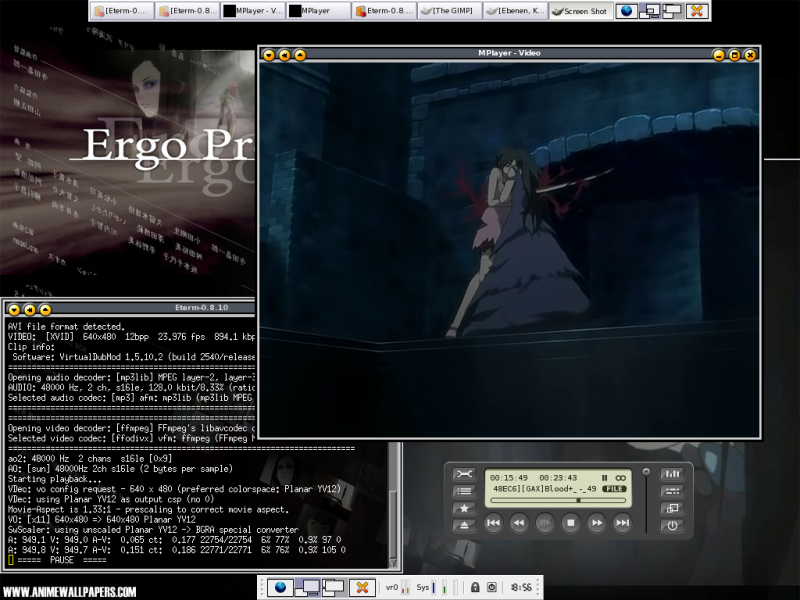

2.21. mplayer¶
Mplayer ist ein vielseitig einsetzbarer Kommandozeilen Mediaplayer mit verschiedenen graphischen Oberflächen, der auch zum Kodieren eingesetzt werden kann. 
{kind=link}
2.21.1. Installation¶
Sowohl in den FreeBSD Ports als auch unter Pkgsrc sind mplayer und die Encoder-Komponente mencoder separate Pakete. In den OpenBSD Ports hingegen werden beide von einem Port installiert.
multimedia/mplayer (FreeBSD)
multimedia/mencoder (FreeBSD)
multimedia/mplayer (pkgsrc)
multimedia/mencoder (pkgsrc)
x11/mplayer (OpenBSD)
2.21.2. Graphische Oberflächen¶
Die GTK Oberfläche wird normalerweise mitgebaut und kann mit gmplayer aufgerufen werden. Alternativ gibt es auch kmplayer für KDE.
2.21.3. mencoder¶
Mit der mencoder Komponente von mplayer kann Film und Ton in verschiedene Formate umgewandelt werden. Auch DVD Rips sind damit möglich.
2.21.4. Widescreen Monitor¶
Mplayer geht davon aus dass der Monitor ein Seitenverhaeltnis von 4:3 hat. Alle Widescreen Benutzer muessen folgendes in ~/.mplayer/config eintragen:
monitoraspect=16:9
oder als Option -monitoraspect 16:9 beim starten des Mplayer mitgeben. Bei einem 16 zu 10 Monitor muss natürlich 16:10 verwendet werden.
2.21.5. Streams abspeichern¶
Mit folgendem Aufruf kann man Streams auf der Festplatte speichern:
# mplayer -dumpstream -dumpfile /tmp/stream.rm rtsp://server/directory/stream.rm
2.21.6. Weiter Wiki Artikel mit Mplayer/Mencoder¶
2.21.7. Verweise¶
Die mplayer Homepage.
Die Dokumentation und die Manpage auf Deutsch (nicht immer vollständig).
Die Dokumentation und die Manpage auf Englisch.
multimedia/mplayer und multimedia/mencoder in den FreeBSD Ports.
multimedia/mplayer und multimedia/mencoder in Pkgsrc.
x11/mplayer in den OpenBSD Ports.
Zuletzt geändert: 2021-05-29